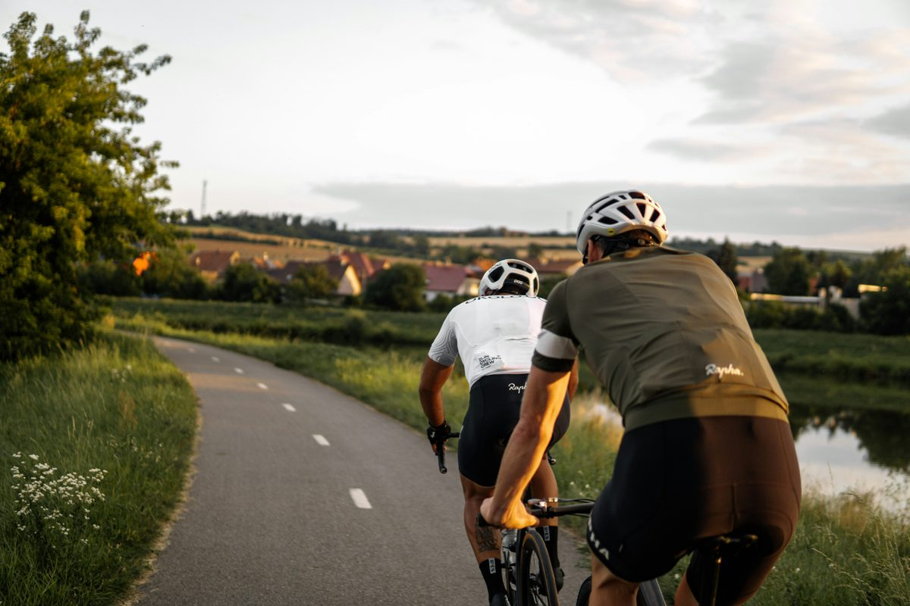

そ
そうた
@sota_ride
友達と夕方のサイクリングへ
川沿いのサイクリングロードを2人で40km。 日が傾いてきて、景色が一気にきれいになる時間帯でした。 次は朝から走って、隣町のパン屋まで行きたい。

川沿いのサイクリングロードを2人で40km。 日が傾いてきて、景色が一気にきれいになる時間帯でした。 次は朝から走って、隣町のパン屋まで行きたい。

このページは「あとでクリップ」の紹介用に作成したサンプル投稿です。人物・内容は架空のものです。